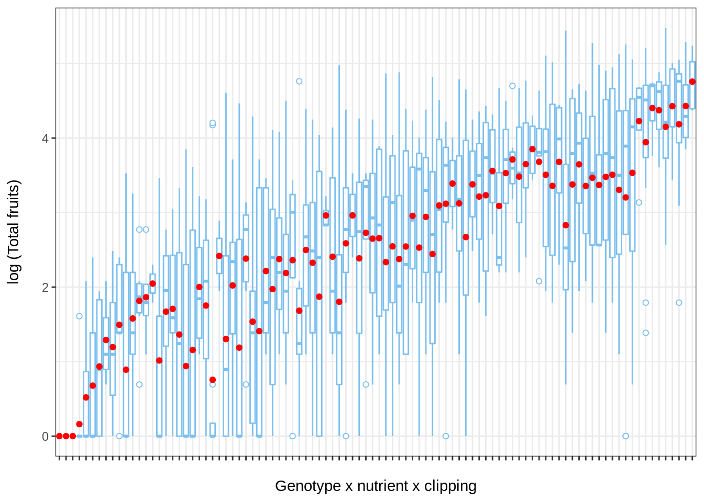
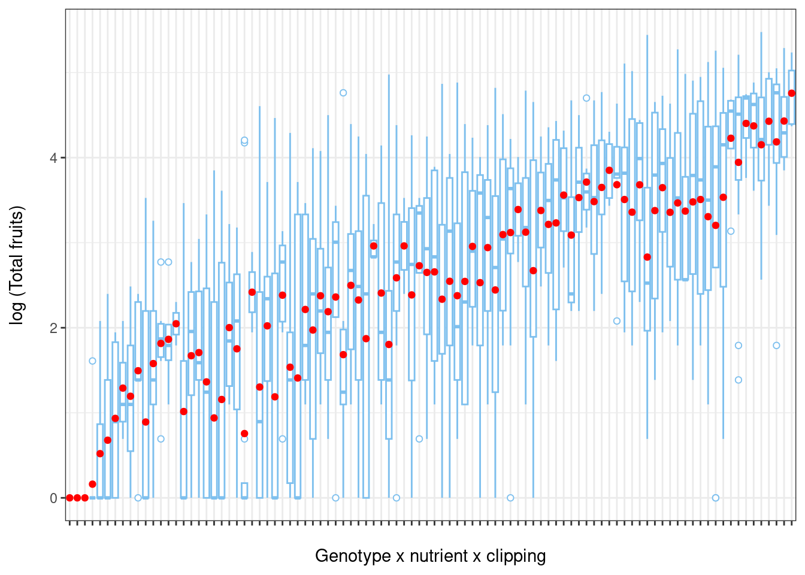
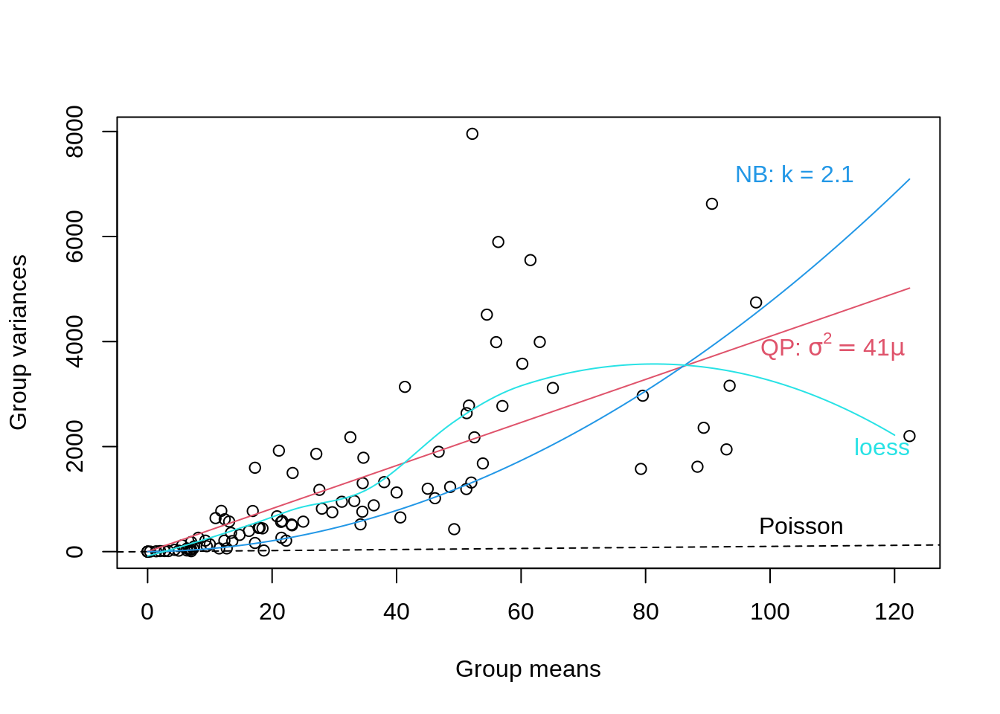

Chapitre 14 Choisir la distribution des erreurs
Nous devons maintenant choisir une distribution d’erreurs. Ce choix sera informé par la structure de nos données.
La variable réponse constitue des données d’abondance, donc nous devons choisir une distribution de Poisson (i.e variance égale à la moyenne)
Let’s take a look:
# Avant d'aller plus loin, nous devons choisir une
# distribution d'erreurs. Ce choix sera guidé par la
# structure de nos données. Notre variable de réponse est
# une donnée de comptage, ce qui suggère que nous avons
# besoin d'une distribution de Poisson (c'est-à-dire que la
# variance est égale à la moyenne).
hist(dat.tf$total.fruits, breaks = 50, col = "blue", main = "",
xlab = "Total fruits", ylab = "Count")
Cependant, comme nous le verrons, la variance de chaque groupe augmente beaucoup plus rapidement que prévu…
Exploration de la variance
Examinons de plus près la variance au sein de nos données.
Pour illustrer l’hétérogénéité de la variance, nous allons créer des boîtes à moustaches (boxplots) du log du nombre total de fruits (variable réponse) par rapport aux différents facteurs environnementaux.
Créons d’abord de nouvelles variables qui représentent toutes les combinaisons de nutriments x herbivorie x facteur aléatoire.
# Explorons la variance dans nos données Créez de nouvelles
# variables qui représentent chaque combinaison de variables.
dat.tf <- within(dat.tf, {
# genotype x nutrient x clipping
gna <- interaction(gen, nutrient, amd)
gna <- reorder(gna, total.fruits, mean)
# population x nutrient x clipping
pna <- interaction(popu, nutrient, amd)
pna <- reorder(pna, total.fruits, mean)
})Maintenant, visualisons:
library(ggplot2)
# Boxplot of total fruits vs genotype x nutrient x clipping interaction
ggplot(data = dat.tf, aes(factor(x = gna), y = log(total.fruits + 1))) +
geom_boxplot(colour = "skyblue2", outlier.shape = 21,
outlier.colour = "skyblue2") +
ylab("log (Total fruits)\n") + # \n creates a space after the title
xlab("\nGenotype x nutrient x clipping") + # space before the title
theme_bw() + theme(axis.text.x = element_blank()) +
stat_summary(fun = mean, geom = "point", colour = "red")
De même, la variance du total de fruits montre une grande hétérogénéité entre les populations (population x nutriments x herbivorie).
Retour au choix de la distribution des erreurs
Comme nous venons de le voir, il existe une importante hétérogénéité parmi la variance de chaque groupe, même lorsque la variable réponse est transformée (i.e. log).
Pour identifier la famille de distribution la plus appropriée , nous pouvons examiner un graphique de diagnostic de la variance de chaque groupe par rapport à leurs moyennes. Nous présentons un exemple ci-dessous pour le regroupement par génotype x nutriments x herbivore (clipping).
- Si nous observons une relation linéaire entre la variance et la moyenne avec une pente = 1, une famille de Poisson serait appropriée,
- Si nous observons une relation moyenne-variance linéaire avec une pente> 1 (c. Var = φµ où φ > 1), la famille quasi-Poisson (tel que présenté ci-dessus) doit être utilisée,
- Enfin, une relation quadratique entre la variance et la moyenne (c. \(Var = µ(1 + α) or µ(1 + µ/k)\)), est caractéristique des données surdispersées résultant d’une hétérogénéité sous-jacente entre les échantillons. Dans ce cas, la distribution binomiale négative (Poisson-gamma) serait plus appropriée.
## Run a diagnostic lot of the group variances vs group means
## (genotype x nutrient x clipping grouping). Code used to
## produce the plot :
## https://github.com/QCBSRworkshops/workshop07/blob/main/pres-fr/data/glmm_e.r
## Substantial variation among the sample variances on the
## transformed data For example, among genotypes:
grpVars <- tapply(dat.tf$total.fruits, dat.tf$gna, var)
grpMeans <- tapply(dat.tf$total.fruits, dat.tf$gna, mean)
# Quasi-Poisson
lm1 <- lm(grpVars ~ grpMeans - 1)
phi.fit <- coef(lm1)
# The -1 specifies a model with the intercept set to zero
# Negative binomial
lm2 <- lm(grpVars ~ I(grpMeans^2) + offset(grpMeans) - 1)
k.fit <- 1/coef(lm2)
# The offset() is used to specify that we want the group
# means added as a term with its coefficient fixed to 1
# Non-parametric loess fit
Lfit <- loess(grpVars ~ grpMeans)
# The plot
plot(grpVars ~ grpMeans, xlab = "Group means", ylab = "Group variances")
abline(a = 0, b = 1, lty = 2)
text(105, 500, "Poisson")
curve(phi.fit * x, col = 2, add = TRUE)
# bquote() is used to substitute numeric values in equations
# with symbols
text(110, 3900, bquote(paste("QP: ", sigma^2 == .(round(phi.fit,
1)) * mu)), col = 2)
curve(x * (1 + x/k.fit), col = 4, add = TRUE)
text(104, 7200, paste("NB: k = ", round(k.fit, 1), sep = ""),
col = 4)
mvec <- 0:120
lines(mvec, predict(Lfit, mvec), col = 5)
text(118, 2000, "loess", col = 5)
From the plot above we note that a linear quasi-Poisson may be better than the negative binomial, but additional modeling is needed.